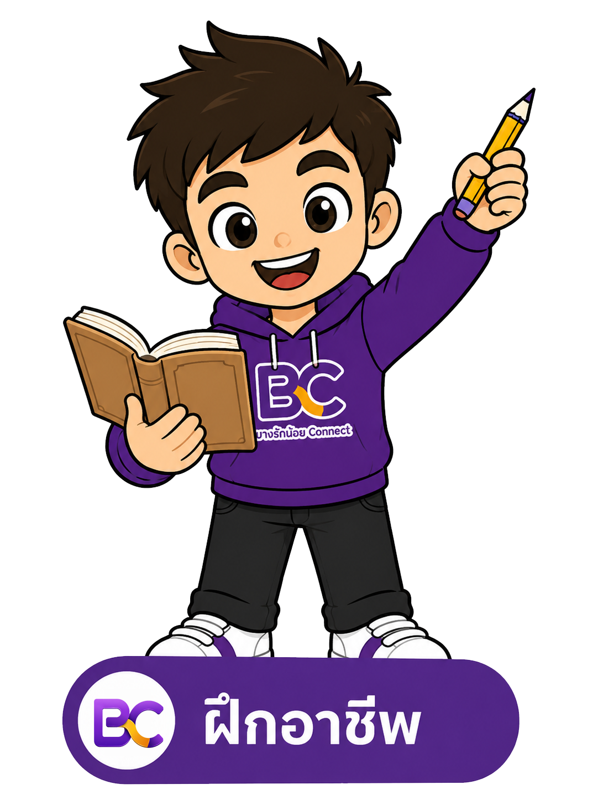

ศูนย์รวมข้อมูลบริการ ชุมชน
และเศรษฐกิจท้องถิ่น
บางรักน้อย Connect
ค้นหาช่าง ร้านอาหาร แหล่งท่องเที่ยว งานฝึกอาชีพ
และกิจกรรมชุมชนในพื้นที่ ได้ง่าย ๆ ในที่เดียว
♟ข้อมูลเชื่อถือได้เชื่อมต่อช่องทางเทศบาล
⌾ใช้งานง่ายสะดวก รวดเร็ว ทุกอุปกรณ์
⌂สนับสนุนชุมชนเศรษฐกิจท้องถิ่นเข้มแข็ง

หมวดหมู่บริการ
แนะนำใกล้คุณ
ช่าง
ช่างไฟฟ้าใกล้บ้าน
⌖ บางรักน้อย
★ 4.9 (ค้นหาบนแผนที่)ร้านอาหาร
ครัวริมน้ำบางรักน้อย
⌖ ริมคลองอ้อมนนท์
★ 4.7 (ดูร้านใกล้เคียง)ท่องเที่ยว
วัดบางรักน้อย
⌖ บางรักน้อย
★ 4.8 (ดูเส้นทาง)ฝึกอาชีพ

อบรมทำขนมไทย
⌖ ศูนย์ฝึกอาชีพใกล้บ้าน
★ หลักสูตรภาครัฐข่าวสาร
ประกาศเทศบาลล่าสุด
⌖ เทศบาลเมืองบางรักน้อย
ข้อมูลทางการBANGRAKNOI CONNECTเรื่องใกล้บ้าน
เรื่องใกล้บ้าน
หาได้ง่ายขึ้น
พื้นที่กลางสำหรับเชื่อมคนในชุมชนกับข้อมูลและบริการที่จำเป็น ตั้งแต่การแจ้งปัญหา ข่าวเทศบาล ร้านค้าในพื้นที่ ไปจนถึงโอกาสเรียนรู้และกิจกรรมของบางรักน้อย
เทศบาลเมืองบางรักน้อย02-193-4512-3www.brn.go.th ↗